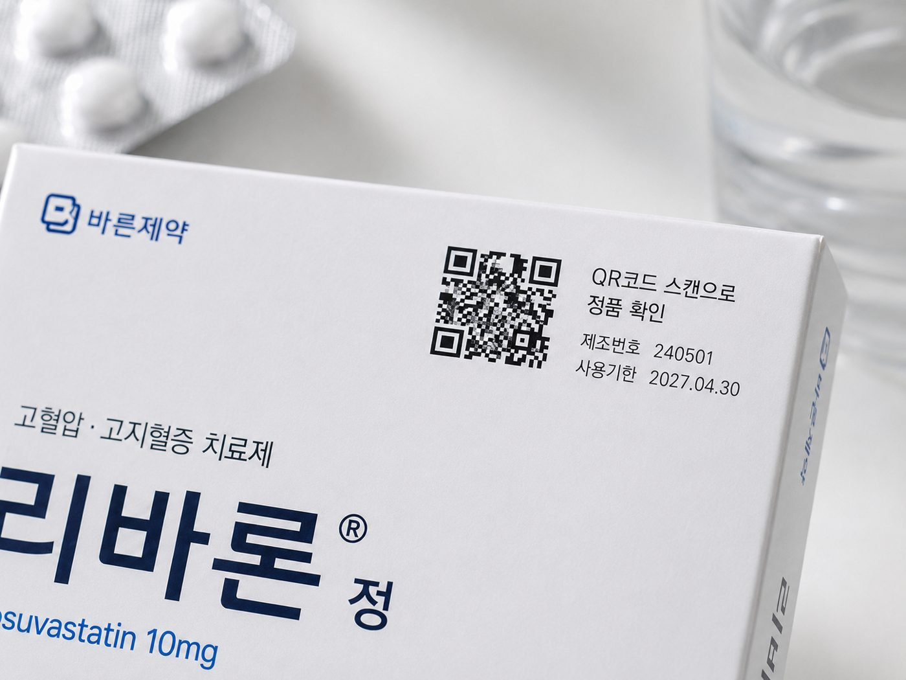

출고 이후의 통제력은 곧 환자 안전이자 규제 대응력입니다.
비인가 채널과 역유통이 가격 질서와 정식 유통망을 교란합니다.
이상 발생 시 전량 회수의 비용과 리스크가 큽니다. 범위 특정이 어렵습니다.
시리얼라이제이션·추적 규제 소명 자료를 즉시 제출해야 합니다.
출고 이후 현장 데이터가 끊겨 이동·상태를 알 수 없습니다.
제품마다 개별 난수 시리얼을 부여하고 LOT·팔레트까지 계층으로 연결합니다. 단품까지 정밀 역추적이 가능합니다.
이상 범위를 데이터로 특정해 표적 리콜합니다. 전량 회수 대비 비용·리스크를 줄이고, 회수 이력을 감사 원장에 남깁니다.
입출고·스캔·판정·회수 이력을 수정 불가능한 WORM 원장에 기록해, 감사 요청 시 즉시 제출합니다. EU DPP·GS1 Sunrise 대응 기반입니다.
제품별 시리얼 생성·부착, 출고 데이터 바인딩.
물류 1스캔 전수검수, LOT 단위 이동 추적.
이상 LOT 표적 회수, 동적 라우팅 안내.
이력을 WORM 원장에 기록, 감사 즉시 대응.
실제 제품에 부착된 난수 QR — 소비자는 스캔 한 번으로 정품을 확인하고, 브랜드는 출고 이후를 관제합니다.
